D01 · Тиха садиба
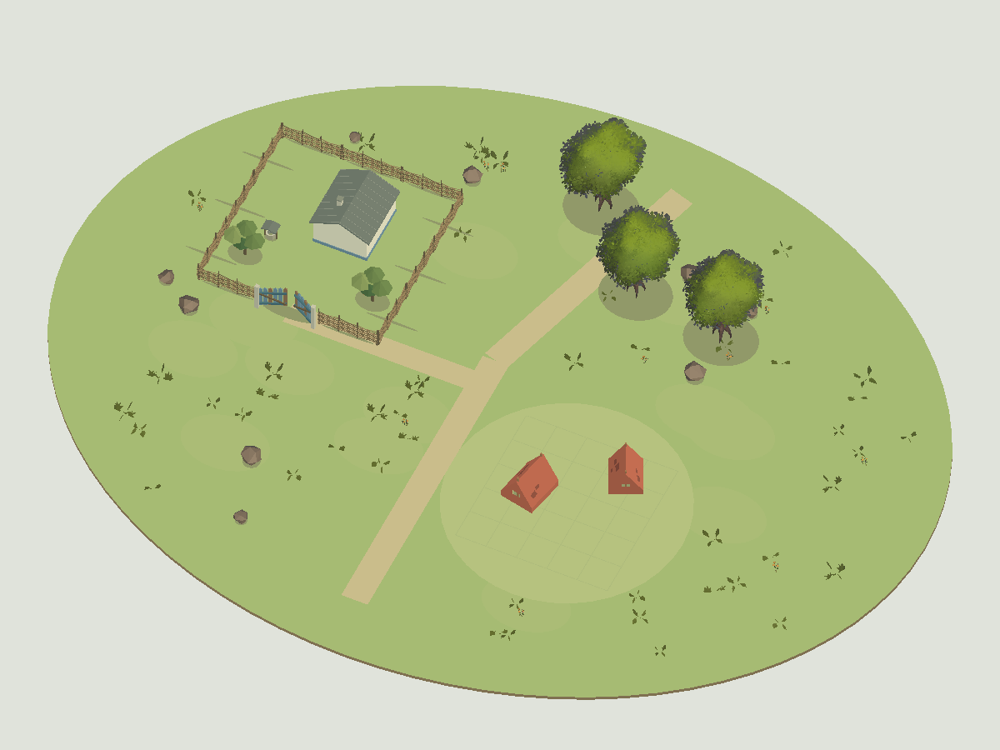
Білена хата, криниця та замкнений тин; світла галявина праворуч.
Прийнято як опорний study садиби; зблизити фактуру дерев у наступному проході.
Моделі та оцінка
Білена хата й криниця стоять усередині цілісного тину, відкриті ворота мають підхід до головної стежки. Табір праворуч залишається відкритим. Плодові Synty дерева тепер кольорові; їхня дрібна фактура відрізняється від великих граней власного саду. Підхід іде уздовж передньої огорожі; у production authoring додати короткий перпендикулярний вихід із воріт перед поворотом до дороги.
Donor: M0760, M0807, M0816, M0821. Native preview: 31,258 triangles,
150 renderers, 5 materials. Це не runtime budgets.
Квитанція та source hashesD02 · Весняний сад
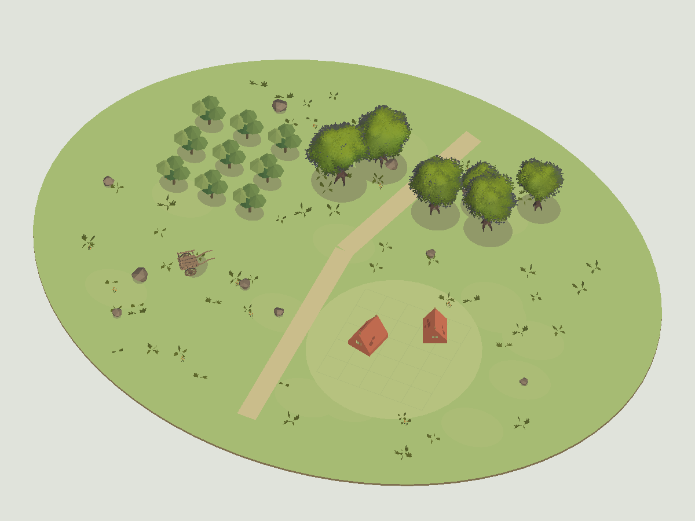
Ряди плодових дерев, польові квіти й ручний візок; відкрита межа саду.
Прийнято як варіант саду; квіти й візок оцінювати також у розмірі roadmap картки.
Моделі та оцінка
Ряди дев’яти власних плодових дерев читаються як сад, візок стоїть зовні, табір не перекритий. Donor крони по протилежному краю дають затінок і другий силует.
Donor: M0760, M0807, M0816, M0821, M0843. Native preview: 42,718 triangles,
169 renderers, 5 materials. Це не runtime budgets.
Квитанція та source hashesD03 · Соняшниковий край
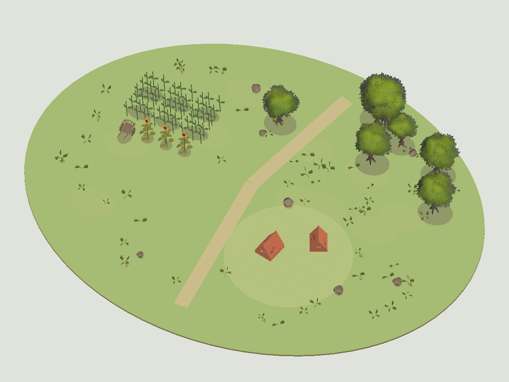
Соняшники читаються смугою поля, а не випадковими кущами; візок на межі.
Прийнято як напрям поля; далі додати ґрунтові смуги й згрупувати менш рівномірно.
Моделі та оцінка
Після збільшення поля є два ряди груп стебел і три видимі жовті соняшники перед ними; візок поруч. Поле відділене від табірного центру. Власні patches ще виглядають рідше за живе поле.
Donor: M0760, M0807, M0810, M0816, M0821, M0843. Native preview: 52,641 triangles,
156 renderers, 6 materials. Це не runtime budgets.
Квитанція та source hashesD04 · Пасіка під садом
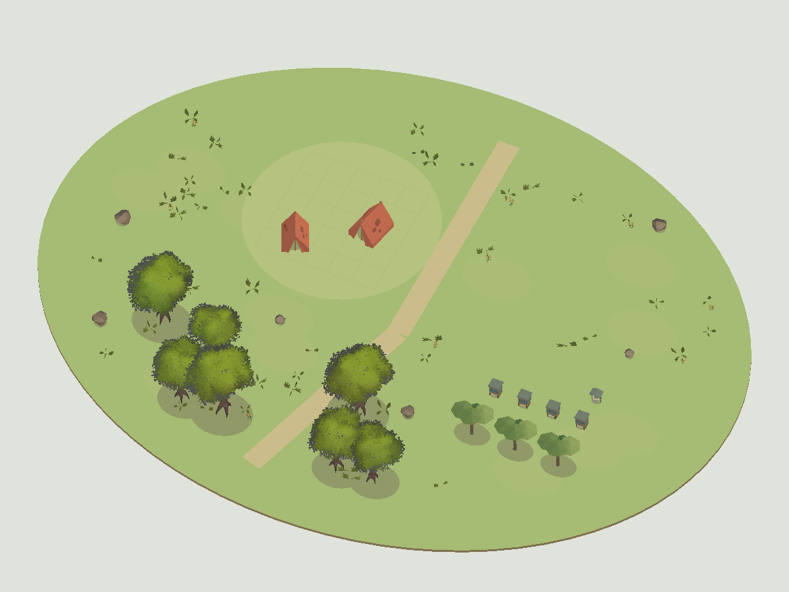
Чотири вулики й плодовий затінок; стежка проходить повз робочу ділянку.
Прийнято як опорний study пасіки.
Моделі та оцінка
Чотири вулики та три садові дерева впорядковано на робочій ділянці. Табір і акцент змінили сторони; крони не перекрили галявину.
Donor: M0760, M0807, M0816, M0821. Native preview: 40,464 triangles,
138 renderers, 5 materials. Це не runtime budgets.
Квитанція та source hashesD05 · Березове узлісся
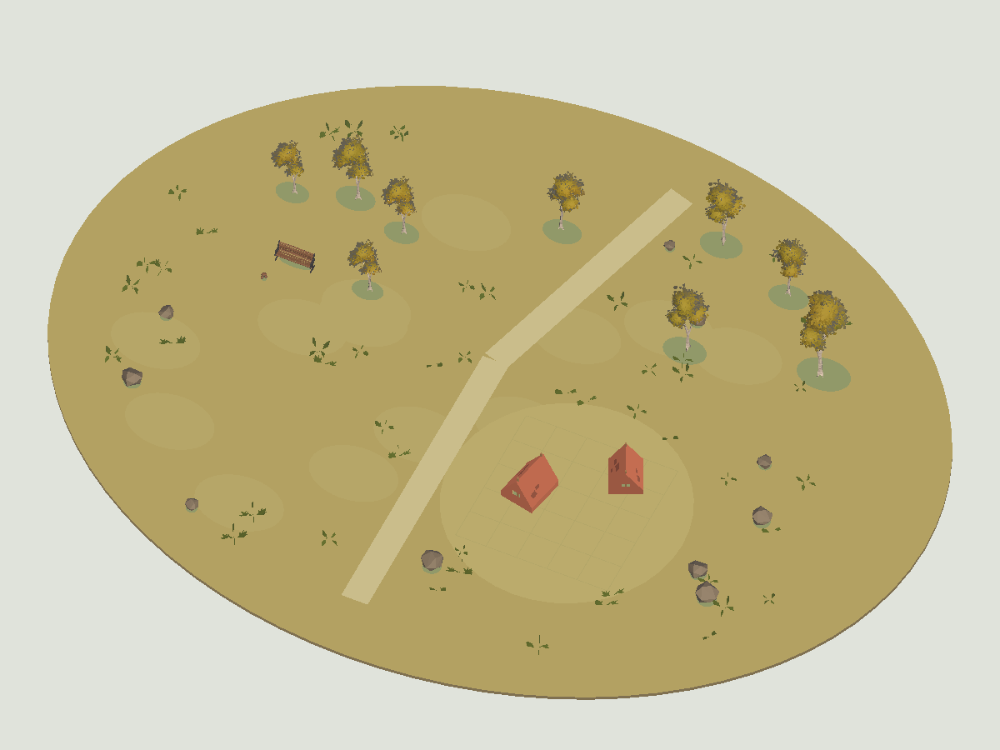
Жовті берези, грибний край і лавка; низька галявина з теплими наметами.
Прийнято як осіннє узлісся; грибний край лишити детальним акцентом.
Моделі та оцінка
Жовті берези мають тонкі світлі стовбури, між ними видно лавку. Осінній ґрунт відрізняється від весняного; грибна група на загальному ракурсі дуже дрібна.
Donor: M0571, M0760, M0807, M0813, M0874. Native preview: 16,126 triangles,
135 renderers, 6 materials. Це не runtime budgets.
Квитанція та source hashesD06 · Соснова стоянка
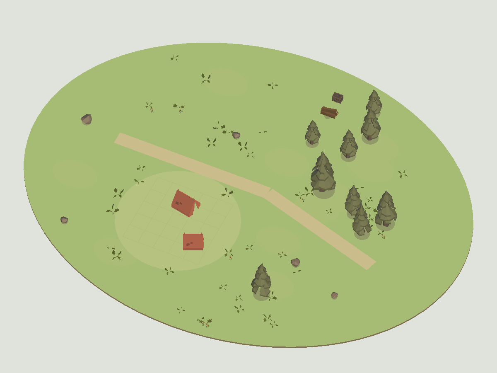
Високий хвойний силует, дрова й ящик; відкритий передній план для табору.
Прийнято як опорний study лісової стоянки.
Моделі та оцінка
Хвойний силует, стіс дров і ящик читаються окремо від повернутої табірної галявини. Прості конічні дерева добре узгоджуються з власними наметами.
Donor: M0187, M0760, M0807, M0821, M0834. Native preview: 11,668 triangles,
118 renderers, 5 materials. Це не runtime budgets.
Квитанція та source hashesD07 · Вербовий ставок
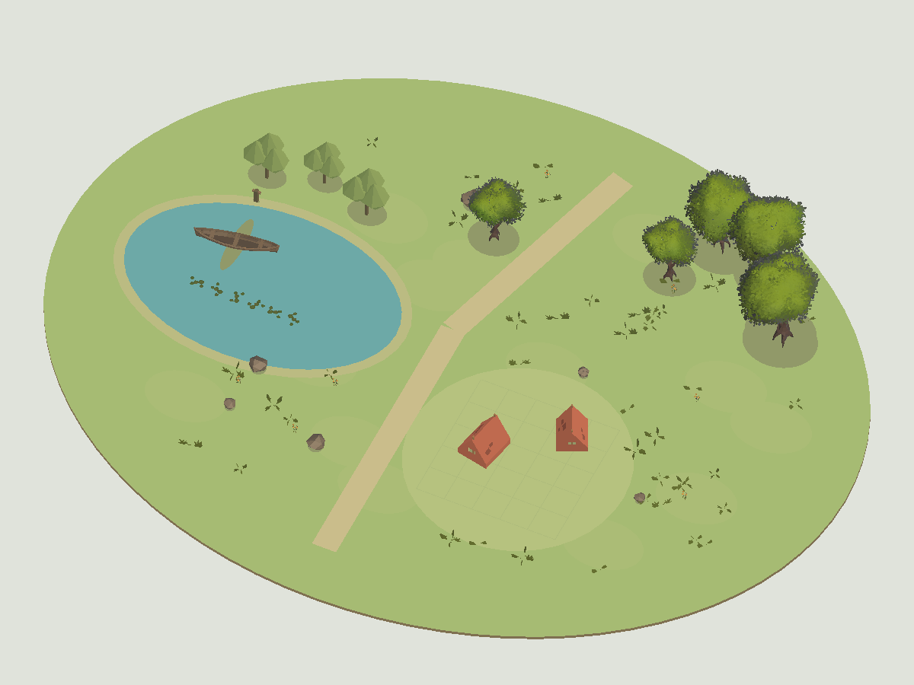
Верби, дерев’яний човен і швартовний стовп; гладка вода з окремою береговою смугою.
Прийнято як опорний study ставка; production воду й тіні перевіряти окремо.
Моделі та оцінка
Гладка проектна вода, човен і шість малих груп латаття мають коректний масштаб. Причальний стовп і верби стоять біля сухого берега, табір окремо. Контактна пляма човна ще є умовною, не фізичною тінню.
Donor: M0760, M0807, M0816, M0821, M0982, M1029. Native preview: 34,001 triangles,
131 renderers, 7 materials. Це не runtime budgets.
Квитанція та source hashesD08 · Очеретяний берег
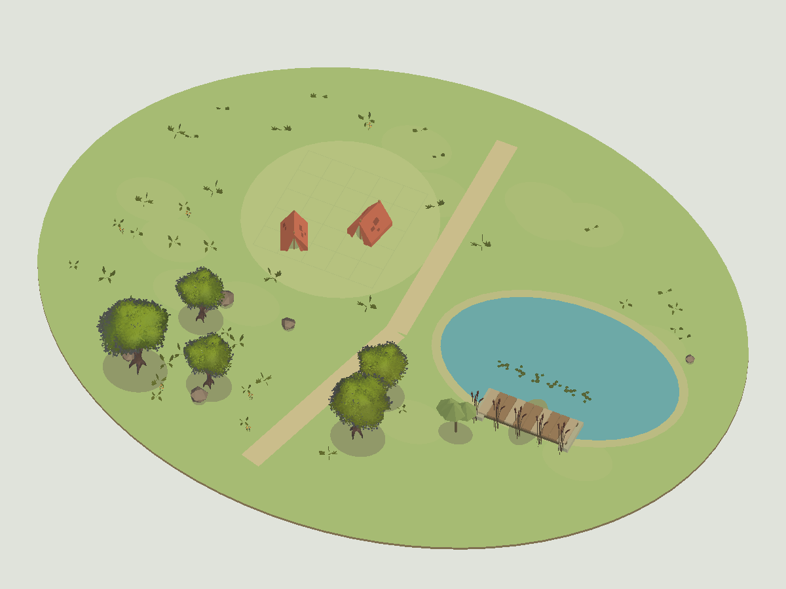
Рогіз і місток на березі; вода не заповнює місце табору.
Прийнято як береговий study; у наступному художньому проході прорідити рогіз і додати береговий підхід.
Моделі та оцінка
Місток перенесено на вузьку берегову ділянку, кінці виходять на сушу. Рогіз має виразні верхівки й росте поруч із настилом; силует ще щільний біля містка. Латаття більше не перекриває сцену.
Donor: M0760, M0807, M0816, M0821, M0982, M0987. Native preview: 31,348 triangles,
124 renderers, 7 materials. Це не runtime budgets.
Квитанція та source hashesD09 · Лісова хатина
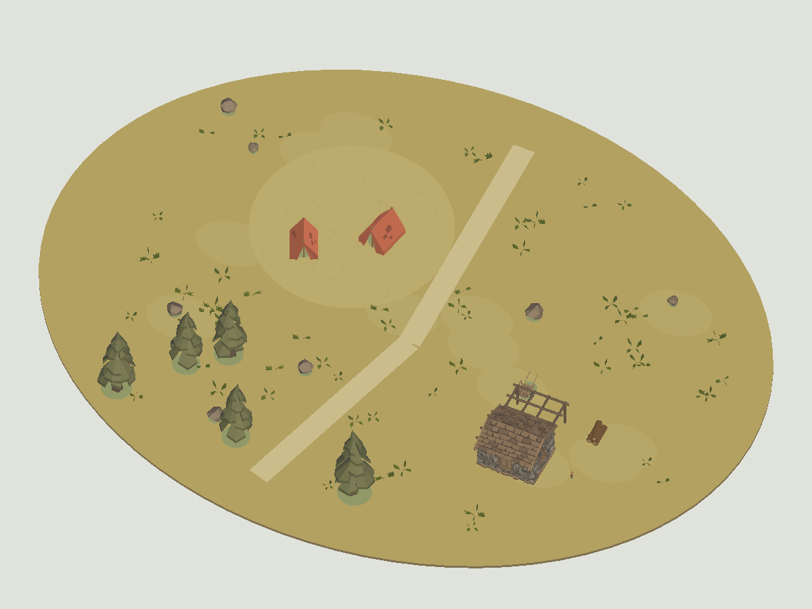
Кам’яно-дерев’яна хатина, склад дров і лісовий візок; камерне місце перепочинку.
Прийнято як альтернативний лісовий мотив; не використовувати як універсальну українську хату.
Моделі та оцінка
Хатина, запас дров і візок дають окреме лісове місце. Частина підвісу дрібна; дерев’яний каркас біля даху є властивістю donor cabin і не схожий на білену садибу.
Donor: M0187, M0742, M0760, M0807, M0843, M0915. Native preview: 17,983 triangles,
132 renderers, 4 materials. Це не runtime budgets.
Квитанція та source hashesD10 · Осінній хутір
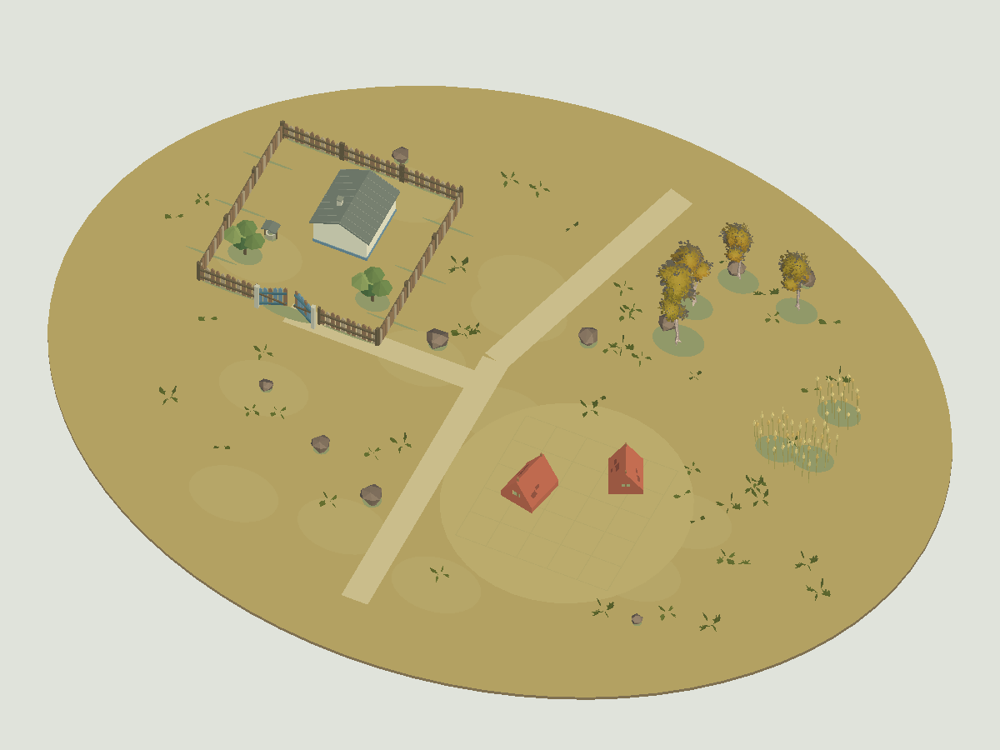
Білена хата за штахетником, жовте узлісся і невеликий край пшеничного поля.
Прийнято як опорний study осіннього хутора.
Моделі та оцінка
Осінній двір за штахетником, жовті берези й пшенична межа читаються роздільно. Ворота мають відкритий підхід, галявина вільна. Підхід іде уздовж передньої огорожі; у production authoring додати короткий перпендикулярний вихід із воріт перед поворотом до дороги.
Donor: M0760, M0807, M0813. Native preview: 13,970 triangles,
155 renderers, 5 materials. Це не runtime budgets.
Квитанція та source hashesD11 · Зимова садиба
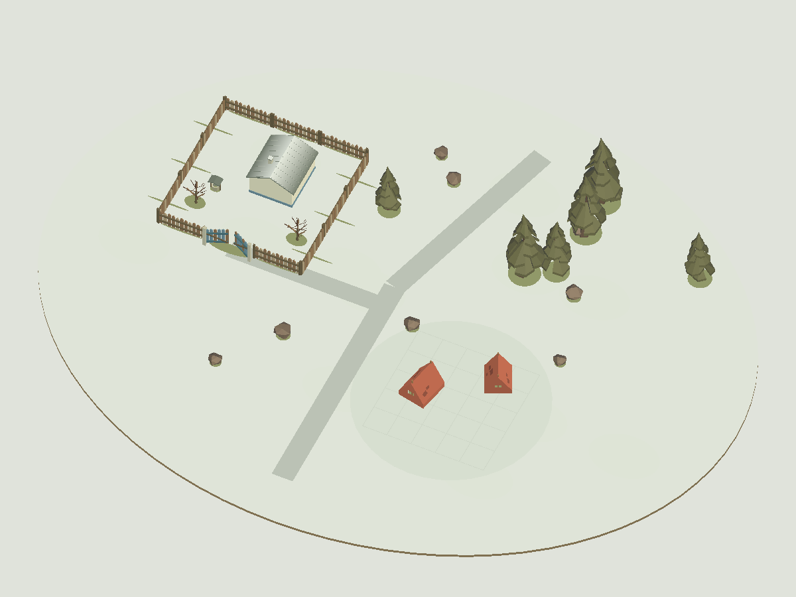
Той самий зрозумілий двір у снігу; голий сад, хвойне тло й доступний підхід.
Прийнято як зимовий study; далі підсилити край ґрунту та додати сніг на хвойні крони.
Моделі та оцінка
Сніговий ґрунт, світла зимова похідна даху й голі плодові дерева відділяють сезон. Хвойні дерева без снігових шапок; край світлої діорами слабо контрастує з тлом. Підхід іде уздовж передньої огорожі; у production authoring додати короткий перпендикулярний вихід із воріт перед поворотом до дороги.
Donor: M0187, M0807. Native preview: 8,686 triangles,
96 renderers, 3 materials. Це не runtime budgets.
Квитанція та source hashesD12 · Сільська зупинка
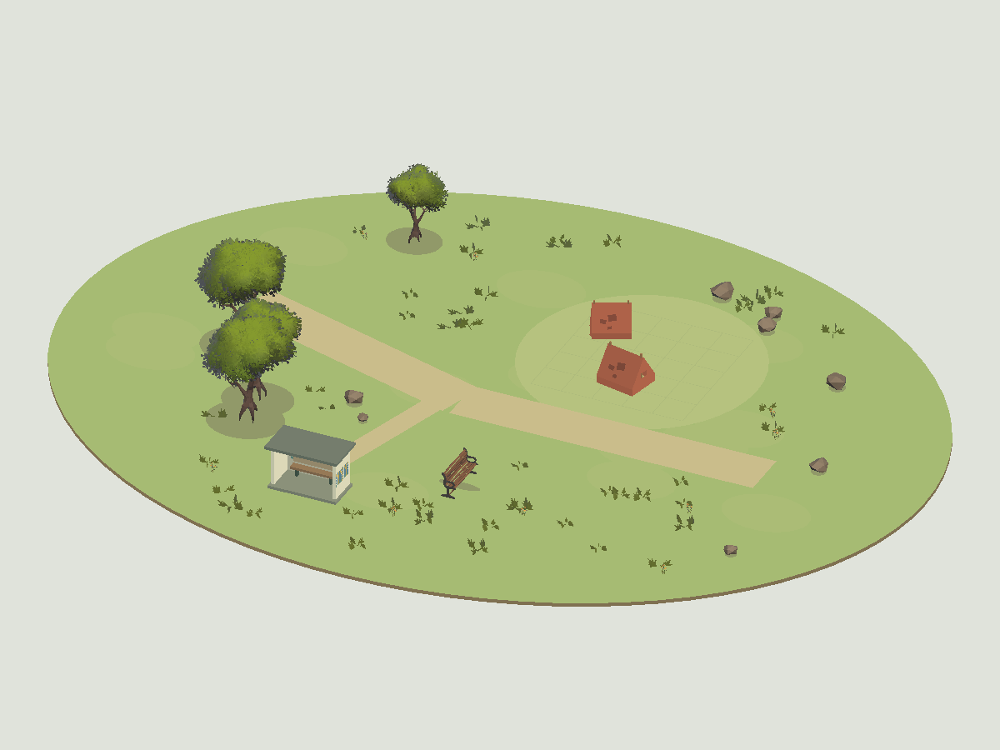
Мозаїчна зупинка біля дороги, лавка й дерево; табір на окремій бічній галявині.
Прийнято як study сільської зупинки; мозаїка залишається близькою деталлю, не головним силуетом.
Моделі та оцінка
Нижчий ракурс показує лавку всередині зупинки; власну синьо-золотаву мозаїчну панель видно на зовнішній бічній стіні. Донор лавка окремо, табір на бічній галявині. Детальний мотив дрібний у масштабі всієї сцени.
Donor: M0571, M0760, M0807, M0816, M0821. Native preview: 26,993 triangles,
122 renderers, 6 materials. Це не runtime budgets.
Квитанція та source hashes